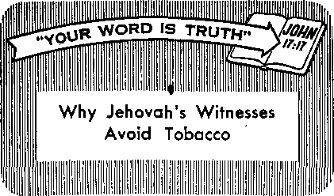

wercising Dominion over the Animals
PAGE* 5 .
wiping the Handicapped
pages
uth Africa—a Study in Black and White
PAGE 17
k Trees That Influence Modern Living
PAGE 24
JANUARY 22, 1960
THE MISSION OF THIS JOURNAL
New* sources that are able to keep you awake to the vital Issues bf 014^— times mutt be unfettered by censorship and selfish interests. “Awake!" has no fetters, it recognizes facts, faces facts, is free to publish facts, it is not bound by political ambitions or obligations; it is unhampered by advertisers whose toes must not be trodden on; it is unprejudiced by traditional creeds. This journal keeps itself free that it may speak freely to you. But it does not abuse its freedom. It maintains integrity to truth.
"Awokel” uses the regular news channels, but is not dependent on them. Its own correspondents are an all continents, in scores of nations.. From the four corners of the earth their uncensored, on-the-scenes reports come to you through these columns. This journal's viewpoint is not narrow, but is international. It it read in many notions, in many languages, by persons of all agesi Through its pages many fields of knowledge pass in review—government, commerce, religion, history, geography, science, social conditions, natural wonders—why, its coverage is os broad as the earth and as high as the heavens.
“Awake!’’ pledges itself to righteous principles, to exposing hidden foes and subtle dangers, to championing freedom for all, to comforting mourners and strengthening those disheartened by the failures of a delinquent world, reflecting sure hope for the establishment of a righteous New World.
Get acquainted with "Awoke!" Keep awoke by reading "Awokel"
. Publish so Simultaneously in ths' United States by the WATCHTOWER BIBLE AND TRACT SOCIETY OF NEW YORK, INC. 117 Adams Street Brooklyn 1, N. U. S. A.
and in England by WATCH TOWER BIBLE AND TRACT SOCIETY Watch Tower House, The Ridgeway London N.W. 7, England.
N. H. Knokb, President Grant Suites, Secretary
Printing this iaauo: 3,0Qa,an
“Awake!” I> pttbllahed in the Co I lowing 21 lantiagti: Sem Ira oath ly—Afrikaans, Danish. Dlllcb, Bngllab, Finnish, French, German. Greek, Italian, Japanese. Norwegian, Portuguese, Spanish, Sweclfsh, Tagalog, Zulu.
Monthly—Clnyan)*, Indonesian, Korean, Polish, Ukrainian,
Yearly subscription rates
Bflces tor aemlmontlllr editions
A oar I cl, U.S., 117 Adama st.. Brooklyn 1, N.Y. SI AastrilM, 11 Beresford EM., Slrathfleld, N.S.W. 8/. Canada, ISO Brldgelsnd Are., Toronto 1'1, Ont. *1 England, Watch Tower House,
The Ridgeway, London N.W. 7 7/-
Nnr latest, nil New North Bel., Auckland, s.W. 1 7/-Sostk Africa, Private Bag, P.O. EMndstonteln, Tri. 77-
Mtmtbly editions cost half the ahove rates.
4d Et copy (Australia, 5d)
Remittances for subscriptions should be sent to tbs cfflca in your country. Otherwise tend your remittance to London. Notice of expiration la cent et least two Issues before suhscrlptlon empires.
CHAXSES OF ADDRESS tlKHte null W ttllrtr Hay) before your muring data. GNe us year old and aw address (If passible, yosr old addins MUI). Watek Tower, Watch Tower House, The Ridgeway, Lndon N.W. 7, England.
Entered as second-ciass matter st Srooklrn, N.Y. Printed In England
The Bikie translation and its “Awake!’’ Is the Hew World Translation of the Holy Scrlgtares. .When other translations are used the fallowing symbols will appear behind tbs cite Monti
AB — American Standard Version JJD - Catholic Douay version Alo — James Moffatt’s eery ion
AT - Ari American Translation £D — The Emphatic Dlaglctt JEO - j. B. Botherhasn’s version
AV — Ambort»d Vemhm (1011} JP - Jsrrlah Publication (Inc. ns - Revised Standard Version
Da - J. N. Iterbfs version he - Isaac lesr’s sersfon I'g - kuirerv Turing's smiirn
CONTENTS
Exercising Dominion over the Animals
"A World-wide Sodom and Gomorrah"
South Africa—a Study In Black and White
Land of the Pharaohs
Oak Trees That Influence Modern Living
“Your Word Is Truth”
Why Jehovah’s Witnesses
Avoid Tobacco
Watching the World
HUNGER is a strong word meaning an intense craving or desire for any object or thing, but thirst appears to be even a stronger word. A man can live a month or more without food, but he can live only a few days without water. Water is essential to human life, because many parts of the body are composed mostly of water. For example, blood is 92 percent water, muscles are 75 percent water, even 22 percent of our bones and 2 percent of teeth enamel is water. To maintain good physical health under normal conditions one should take in at least six to eight pints of water a day either through liquids or through foods. When one is deprived of an ample supply of water, there is a craving for liquids. We call this sensation thirst.
As the natural man craves food and drink to satisfy his natural appetite, so the spiritual man thirsts for righteousness to quench the desires of the mind and heart. The fleshly body depends for its nourishment upon food from the earth, but the spiritual man seeks food and drink from heaven. Fully appreciating this fact, Jesus said: “Man must live, not on bread alone, but on every utterance coming forth through Jehovah’s mouth.” Bread sustains s the body, but the utterances of Jeho-J vah feed the spirit. Both foods are essentia] for a happy life. The healthy body must hunger and thirst for both, because material food cannot nourish the spirit, since it is not suited for that purpose. Neither can heavenly things support the physical body, for the same reason. However, “it is the spirit that is life-giving; the flesh is of no use at all,” said Jesus. “The sayings that I have spoken to you are spirit and are life.” Therefore, he beckoned to the crowds: “If anyone is thirsty, let him come to me and drink.” “He that exercises faith in me will never get thirsty at all.”—Matt. 4:4; John 6:63; 7:37; 6:35.
Righteousness is a proper and vital food for the mind and heart. It quenches the thirst. However, most men today do not thirst after righteousness, especially not the kind that Jesus proclaimed, which is justice held in love. As a rule, they thirst after other things, such as fame, fortune, power and glory. Every craving has its food and drink. The mouth is fed with bread and water, the eyes with light and beauty, and the depraved mind feeds on fleshly lust. To feed only the natural appetite leaves one eventually disgusted with self, empty, unhappy, dissatisfied. Life becomes a one-way street with only death in view.
But there are other hungers and thirsts that, when satisfied, are renewed in higher desires and more noble aspirations; these are again fulfilled, leading one on the way to everlasting life. Such cravings are for truth, righteousness, goodness and integrity, Happy are those who hunger and thirst for these qualities, for they will be satisfied. Jesus declared: “Happy are those hungering and thirsting for righteousness, since they will be filled,” No longer do they fix their eyes on the sins of the flesh either to cherish or unduly bemoan them. Rather, they fix their eyes on Jesus Christ and on the righteousness that God’s kingdom will bring.—Matt. 5:6.
Jesus’ words at Matthew 5:6 must be understood in a spiritual and not in a physical sense. To hunger and thirst for righteousness may mean to desire the perfect righteousness of the kingdom of God that Jesus proclaimed. Righteousness is one of the attractive features of the Kingdom and is almost always mentioned in connection with it. Isaiah foretold: “With righteousness he [the Messiah or Christ] must judge the lowly ones, and with uprightness he must give reproof in behalf of the meek ones of the earth. . , . And righteousness must prove to be the belt of his hips.” “Look! A king will reign for righteousness itself.” For the complete fulfillment of mankind’s desire for righteousness, Jesus encouraged men to pray: “Let your kingdom come,” and to keep on “seeking first the kingdom and his [God’s] righteousness.” When new heavens and a new earth are fully established by God, mankind’s thirst for righteousness will be quenched, for “in these righteousness is to dwell.”—Isa. 11:4, 5; 32:1; Matt. 6:10, 33; 2 Pet. 3:13..
The thirst for righteousness is both within man and among men. Those who seek will find and be made happy. Mark the thirsty man, the restless craving in his face, the constant wetting of the lips and the swallowing of saliva. Man’s thirst for righteousness must be just as real. He must not be satisfied just to know what is right, he must also want to do what is right. His burning desire is to see righteousness prevail in himself and among men. To this end he studies the Textbook of righteousness, the Bible. He measures his steps and weighs his actions so that they conform to the righteous standards laid out therein. As the psalmist wrote: “From every bad path I have restrained my feet, in order that I may keep your word.” The scribes and Pharisees of Jesus’ day knew God’s law and made outward show of piety, but inwardly they opposed what was right and true. Therefore, Jesus said to his listeners: “If your righteousness does not abound more than that of the scribes and Pharisees, you will by no means enter into the kingdom of the heavens." “Take good care not to practice your righteousness in front of men in order to be observed by them; otherwise you will have no reward with your Father who is in the heavens.”—Ps. 119:101; Matt. 5: 20;6:1.
Righteousness must never be a cloak. It must be a part of one’s thinking, one’s habits and actions. When it is, it brings as its rewards freedom, peace, contentment ,and happiness. The rewards to the righteous man are constant as he reflects the glory of his Maker and is “transformed into the same image from glory to glory, exactly as done by Jehovah the spirit.” Pursue righteousness. “Watch one of integrity and keep the upright one in sight, for the future of that man will be peaceful.”—2 Cor. 3:18; Ps. 37:37.
Animals may astound man with their abilities, yet man’s dominion over the animal creation is undisputed. A number of animals can outrun, outswim, outjump and outclimb man; still man is their master. Many animals ' have keener vision, sharper hearing powers and a better sense of smell than man; yet man dominates them in all these fields. From the standpoint of power, man is no match for an elephant. In Burma one elephant pulled a load of four tons—no trifling feat, especially in the absence of wheels. Still man has proved himself mightier than the giant beast. He has tamed the animal and made the beast do work for him. In the Orient the elephant has produced the Eastern version of the “machine age." However, wherever elephants work we find men in charge. Never do we find the reverse true. Everywhere we turn to study the relationship between man and beasts, the same is true. We find men in charge, exercising dominion over the lower creation.
In the desert lands of Africa and the Middle East the camel is domesticated to serve the needs of his master, man. In Thailand the water buffalo trudges through mud and water pulling man-made plows, going where a tractor would be useless. In the vicinity of the Arctic Circle the Laplanders have tamed the deer to pull sleighs and do other work. Tibetans have harnessed the yak to do work for them. Down under, in the pasturelands of New Zealand, dogs are the sheep farmers’ constant companions. These dogs obediently bring the sheep, often numbering many thousands, to yards for shearing. Cattle dogs on dairy farms are unleashed early in the morning. Without a word of command they trot away to round up fifty to a hundred cows and bring them to the gate nearest the milking sheds. The master has only to open the gate, and the cows are brought in. High up in the Andes the llamas are the friends, companions and work horses of the Indians, while llama lambs are enjoyed as pets.
Everywhere we find man the master of his domain, the earth. He has trained mammals of the sea to play with him and to do stunts. He has taught birds to hunt, fish, talk and play. A naturalist once trained a jumping spider to jump on his hand for food. Certain fleas have been taught to perform feats, such as jumping through hoops. Lions and serpents have been tamed by man.
That man exercises dominion over all other living things on earth, there can be no question. This authority, however, is not of his own making. Man received his power of dominion from his Creator: “And God proceeded to create the man in his image, in God’s image he created him; male and female he created them. Further, God blessed them and God said to them: ‘Be fruitful and become many and fill the earth and subdue it, and have in subjection the fish of the sea and the flying creatures of the heavens and every living creature that is creeping upon the earth.’ ’’—Gen. 1:27,28.
Without special permission from God his Creator, man could not exercise lawful dominion or authority over the beast. For the other creatures of earth are as independent of man as he is of them, and, perhaps, even more so. From the standpoint of seniority, they come before man because they were inhabitants of earth long before man was created. From the viewpoint of the material from which they were created, animals and man are on an equal footing, according to God’s Word stated at Ecclesiastes 3:19, 20: “There is no superiority of the man over the beast. . . . They have all come to be from the dust, and they are all returning to the dust.” Hence it was necessary that man should receive from God a formal charter of rights over the things that were made for him. Jehovah God, therefore, authorized him to exercise his power in subduing the earth and ruling over the lower creation. This is logical and proper in view of man’s being made in the image of God. However, man’s dominion has limits set by God. He was not given dominion over other men.
God willed that man should have dominion. It is, therefore, by divine decree that man rules, Man being assigned dominion, the earth and its various products and the lower inhabitants were turned over to him for the display of his powers. Therefore, writes the psalmist: “As regards the heavens, to Jehovah the heavens belong, but the earth he has given to the sons of men.”—Ps. 113:16,
Man was divinely constituted master of the animal as well as of the vegetable world. The Creator established his mastership through the marvelous mechanism of the incomparable mind that He placed in man. It is the tremendous difference between the human mind and the mind of beasts that lifts man above any classification with the brutes. The elephant may have great power, but man, by utilizing all his mental alertness and by arming himself with powerful weapons, has confirmed his mastership over beasts. Monkeys can look up at the starry heavens, but of earth’s creatures only man can ponder their meaning. Only man can say: “The heavens are declaring the glory of God, and of the work of his hands the expanse is telling.” (Ps. 19:1) In its broadest sense, only the human mind has the power of reason. And it is to man that the Creator has said: "Come now, and let us reason together,” (Isa. 1:18, AS) Only the mind of man can have any conception of time, space, and of self-determination. Only man can appreciate that “for everything there is an appointed time, even a time for every affair under the heavens.” (Eccl, 3:1) Only man is self-conscious and possessed of the ability “to distinguish both right and wrong.” Only man, can “grasp mentally with all the holy ones what is the breadth and length and height and depth and to know the love of the Christ which surpasses knowledge.” Finally, only man can be clothed with .''the tender affections of compassion” and be made to feel ashamed. —Heb. 5:14; Eph. 3:18, 19; Col. 3:12; Gen. 2:25.
Formed with these capacities to think right, to act right, to take in knowledge, with a mind toward holiness and righteousness, the perfect man was qualified to exercise dominion. With the attributes of wisdom, justice, love and power perfectly at balance and at work in him, man was constituted master of all creatures that are destitute of intellectual and moral endowments. When clothed with these high qualities, man resembles his Maker in whose image he was made. Hence, wherever man enters any part of his domain he makes his sway to be felt. There is not an object within his reach that he does not aim at making subservient to his purpose. He has made the seas his highways; the stars have become his pilots on the pathless oceans; the sun he has harnessed as his bleacher, heater and powerhouse; the bowels of the earth have yielded their treasury from which he draws his precious and useful metals and much of his fuel; electricity has become his messenger; birds, plants and animals have become his servants. These are proofs of his ever-growing sway and dominion.
In keeping with this command to man to ‘‘have in subjection” the animals and to “subdue” the earth, no doubt the Creator had in mind that man should distribute the animals and plants as man multiplied over the face of the earth. While a large part of the present distribution of plants and animals has taken place outside the influence of man, yet man has had a part in the distribution. The readiness with which certain species of plants and animals have multiplied and thrived when they have reached the localities into which man has brought them suggests, at least, the thought that man can do much to beautify the earth by moving plants and animals to regions in which they will thrive. For example, there were no rabbits in Australia when the English came there. When 'they were introduced there for hunting purposes they multiplied so rapidly that they almost destroyed the cattle industry. And, too, there were no blackberries in New Zealand originally.
Upon being placed there by man they flourished so that they soon covered thousands of acres of valuable land. Man is responsible for introducing into the United States the English sparrow, which has -multiplied so rapidly that now sparrows represent 40 percent of the bird life of the land. Just as easily, other plants and animals could be moved about the earth to dress and keep it.
Man’s xiivinely constituted dominion over the lower animals highlights the folly and sin of the worship of these creatures, as all these are but creations of Jehovah, who alone has the right to be worshiped by his intelligent creatures. It was for man’s protection that God issued the command: “You must never have any other gods against my face. You must not make for yourself a carved image or a form like anything that is in the heavens above or that is on the earth underneath or that is in the waters under the earth. You must not bow down to them nor be induced to serve them, because I Jehovah your God am a God exacting exclusive devotion.” (Ex. 20:2-5) For man not to obey this command would be a repudiation of his divinely constituted position as earth’s steward, a relinquishing of his dominion.
History is one sad tale of man’s fall to animal worship. The inspired apostle Paul writes: Men “became foolish and turned the glory of the incorruptible God into something like the image of corruptible man and of birds and four-footed creatures and creeping things. . . . [They] exchanged the truth of God for the lie and venerated and rendered sacred service to the creation rather than the One who created, who is blessed forever.” The historian Herodotus says that in early times the hippopotamus was sacred only in the Papremitic Nome of Egypt, while other cities hallowed birds, fishes and serpents. “The cats,” Herodotus observed, “when dead, are carried to sacred buildings” and are embalmed. Lands were set apart for the support of sacred animals. If a person killed any sacred animal purposely, he was punished with death. However, if the animal killed were either a cat, a hawk, or an ibis, the killer was to die, without mercy, and the enraged crowds seldom waited for the formalities of a trial. A Roman, in the time of one of the Ptolemies, who who killed a cat accidentally was torn in pieces on the spot by the populace, in spite of all the efforts of the king’s guard to save him.—Rom. 1:22, 23, 25.
Today animal worship is still popular. In'the East sacred cows, sacred monkeys, peacocks and serpents roam the streets freely. Graven images of these so-called sacred animals are made. Some religionists of the East believe that to kill a sacred cow, whether healthy or sick, is a great sin. Snake worshipers look upon the cobra as an incarnation of God. Idolatry, of course, is rampant throughout the whole world.
Other men have abused their right of dominion over the lower animal creation. Men have starved animals to death, ripped them apart, burned them alive, crushed them piece by piece, tom them to shreds, and much of this man has done in the name of sport. Today, bullfights, cockfights, fish fights, dogfights, and many other so-called sports take their toll of animal life. These are open abuses of his charge. The wise man writes: “The righteous one is caring for the soiil of his domestic animal, but the mercies of the wicked ones are cruel.” The record of man’s mistreatment of animal life proves this proverb true.—Prov. 12:10.
Does this mean it is wrong for man to hunt and fish? No, if such taking of life is done for the good of mankind and not just for gport. God was the first to take animal life. He covered the first human pair with animal skins. He also approved of Abel’s animal sacrifice. Under the Mosaic law animal sacrifices were used in worship. God’s command that holds true to this day is: “Every creeping animal that is alive may serve as food for you.... Only flesh with its soul—its blood—you must not eat.” To eat unbled game was prohibited to Israelites and Christians alike. A Christian is not opposed to the killing of animals for food. Jesus ate fish and lamb meat. He also directed a fishing operation in which a net was used. On another occasion he instructed that a fish be caught with a hook. So, then, according to the Scriptures, it is proper to hunt and fish for food, but nowhere do the Scriptures give one the right to take animal life wantonly.—Gen. 9:3, 4; 3:21; 4:3-5; Luke 24:42, 43; 5:4-6; Matt. 17:27.
In the new world of God’s making peace will reign between man and animals, and between the animals themselves, as man regains his rightful dominion. This perfect state of oneness that will last throughout all eternity is described for us at Isaiah 11:6-9, which says: “The wolf will actually reside for a while with the male lamb, and with the/kid the leopard itself will lie down, and the calf and the maned young lion and the well-fed animal all together; and a mere little boy will be leader over them. . . , They will not do any harm or cause any ruin in all my holy mountain; because the earth will certainly be filled with the knowledge of Jehovah as the waters are covering the very sea.” This will be the heritage of men who will inherit the new world of righteousness.
Handicapped
WIEN a radio technician helped put up hay on a farm a few years ago, his arm and leg were torn off by the baling machine. After surgery the patient was despondent. “I thought my life was over,” he said. He needed help. Referred by his doctor to the Rehabilitation Institute of Chicago, he entered the institute in a wheelchair. Staff members prescribed treatment and the right kind of artificial arm and leg for him. In a little over a month the arm and leg were ready. Thirty training sessions followed; and the patient, now proficient in the use of them, was ready for discharge, his mental attitude vastly improved.
This kind of rehabilitation thus helps a handicapped person improve his frame of mind and develop self-reliance, “Rehabilitation for some lifework should be the first consideration,” says Dr. Winthrop Phelps. “If this does not prove possible, then treatment may achieve a second . . . end, that of freeing the handicapped individual from being cared for by a second individual who may thus fill a more valuable role. . . . The result is still economic rehabilitation for the family.”
Rehabilitation, according to Harlan Lance of the Rehabilitation Institute of Chicago, “isn’t finished until a patient is back in the stream of life, whether it’s a man back in industry, a housewife working in her home or someone who has learned to care for himself.”
So today a successful program for the
handicapped emphasizes abilities. As a therapist at the University of Michigan Medical Center put it; “Rather than emphasize the handicap the goal of a rehabilitation program should be to make the maximum use of the patient’s remaining capabilities.”
Care of the disabled, throughout most parts of the world today, is viewed as a moral obligation. In some countries, such as Britain and Sweden, the government pays the cost of vocational rehabilitation. In the United States state agencies pay. In 1953 the United Nations called a conference for the purpose of organizing, on a world-wide basis, better care for the disabled. Representatives of twenty-six international voluntary organizations responded. In some parts of the world rehabilitation of the disabled is comparatively recent. When a modern rehabilitation clinic opened in Indonesia in 1955, its head, Dr. Douglas Toffelmier, said: “We shall be fighting disease and superstition in a country where physical disability is still regarded as retribution for evil ways.”
Not just the blind, the deaf and the crippled are considered “handicapped” persons today. A broad definition is usually given the terms “handicapped” and “disabled.” Thus Britain’s Disabled Persons (Employment) Act of 1944 said: “The expression ‘disabled person’ means a person who, on account of injury, disease, or congenital deformity, is substantially handicapped in obtaining or keeping employment, or in undertaking work on his own account, of a kind which, apart from that injury, disease or deformity, would be suited to his age, experience and qualifications.”
For those handicapped by loss of arm or leg, artificial ones are available. Much has been written about the outstanding qualities of artificial limbs. Voices have been heard claiming that new, complicated hands have been able to replace the natural ones completely. Many artificial hands, beautiful in form, have been produced; but it turns out in practice that the artificial hand consisting of two hooks directed from the armpit seems still to represent the best artificial hand. As to the artificial leg, better results have been attained, because the function of the leg is much simpler than that of the hand. The invention of the mechanical knee has been a great advantage, and the same is true of the increased knowledge concerning the modern, light metals.
It is really surprising how many things can be done with artificial arms. A young man who lost both legs and both arms, after rehabilitation, was able to put on hooks and artificial legs in the morning and take them off at night. “He uses an electric typewriter, tapping out twenty words a minute,” said a report concerning him. “He writes a good longhand. He shaves with a safety razor and neatly parts and combs his hair. In fact, he does about everything he once did with hands.”
Doing things for themselves, no matter how limited, gives the handicapped persons a feeling of achievement. A whole array of aids and self-help devices enable the handicapped to do things for themselves. Besides artificial limbs and braces, there are self-propelled motor and electric chairs, electric typewriters that respond to a weak, uncertain touch, bookrests, ramps instead of steps in homes, handrails, Braille and Braille typewriters, lip reading, and hearing aids for those who are deaf. A one-armed boy has gained complete independence in feeding h imself by using a fork with a sharpened edge, serving as both knife and fork. A book by Dr. Howard A. Rusk called Living with a Disability contains pictures and descriptions of more than 250 devices and instruments to aid the handicapped. A voluntary health organization, the National Society for Crippled Children and Adults (11 South La Salle Street, Chicago 3, Illinois), publishes inexpensive reprints and leaflets dealing with all types of disabling conditions.
In recent years a vast number of newspaper and magazine accounts and books have told stories of successful efforts to overcome disablement. Not a small number of crippled persons are very good swimmers. Handicapped persons have even become ski champions. German ski champion Toni Brutcher, with the loss of his right leg, and Austrian ski champion Sepp Swicknagl, with the loss of both legs below the knee, overcame their handicaps. The book Champions by Setback tells of many athletes who overcame physical handicaps. United States Supreme Court Justice William Douglas was a victim of polio when a youngster. The National Foundation for Infantile Paralysis awarded him a certificate for "the inspiring example of his ability to overcome the crippling effects of poliomyelitis.” The book Triumph of Love is about a child born without arms. The volume My Left Foot is an account of the daily life of one who was born paralyzed except for one foot.
One of the most recent books telling of successful efforts to overcome disablement is Give Us the Tools. Writer Henry Viscar-di is himself a cripple, born with stumps instead of legs. He writes about himself and his Abilities, Inc., a Long Island, New York, company run entirely by disabled workers. Viscardi thinks that not only the handicapped need rehabilitation but also the public, especially employers. Why? “They heap pity on the disabled,” writes Viscardi, “and smother thejn in a soft blanket of charity, and turn away in embarrassed shock from the crippled man who wants a job. They do not know that they are killing with kindness. That’s why Abilities exists. To prove that the disabled can help themselves if people everywhere will only give them a chance. Abilities, Inc., is a factory run by and for the disabled. It was started in 1952 with one paralyzed worker in a grimy, unfurnished garage. Within five years it had grown to a million dollar business with more than three hundred employees in a shining new plant of its own. . . . Today, Abilities stands as a national and international model for all the world to see.
"One of its executives, a man named Ray Leizer, wears two steel hooks in place of hands. If you ask him how he manages he’ll observe drily that he’s no handshaker, or backslapper, but he knows how to get things done. A foreman in the packaging department was born without arms or legs. He has developed amazing ability to use his vestigial stumps. A woman who is both blind and deaf has served with surefingered skill on the production line. Another employee is so badly injured that he can neither sit nor stand. He reclines at his desk at a 45° angle, in a special sling of his own devising, and is one of the most valuable men in the plant. He works with his head and his wonderful hands. Still another man lies on a litter, flat on his back, and does a day’s work every day.”
Faced with the success of Viscardi’s Abilities, Inc., and much enlightenment regarding the handicapped, what is the attitude of employers today?
A recent' survey was made of New Yo?k City employers. In its issue of October 1, 1959, the New York Times said editorially: “A three-year survey by the Federal Employment and Guidance Service, an affiliate of the Federation of Jewish Philanthropies, has found that fewer than one-third of New York City employer?, are willing to hire the physically handicapped who possess the necessary job qualifications. Those close to the situation hold that the remedy might lie in legislation, or in voluntary establishment of new hiring practices.”
Why this reluctance to hire the handicapped? Some employers fear that they are more likely to injure themselves on the job, raising insurance rates. These fears, however, have proved to be without real foundation. A bigger drawback to hiring the handicapped is the common belief that they are not good workers.
Companies that hire qualified handicapped persons have found not only less absenteeism and malingering among them but also better safety consciousness and production. In its Gw.-ide in Hiring the Physically Handicapped, the National Association of Manufacturers says: “In the past decade, production records of thousands of physically handicapped persons in industry indicate beyond any question that so-called ‘handicapped’ workers are equal to—and in some instances better than—their able-bodied associates in such important factors as attendance, turnover, safety and productivity.” Whatever the handicapped lose in flexibility because of disability, they seem to make up for by concentrating on a job or a few jobs, learning to do them better.
One authority in the field of selective placement writes: “Very few jobs require all the physical abilities of a man. Most disabled persons have far more ability than disability. When such workers are placed according to their abilities in jobs making no physical demands they cannot meet, the disability will disappear as a job handicap.” When the United States Civil Service Commission studied 6,000 types of positions, it found that disabled persons could fill effectively all but a very few jobs.
Some employers may not have had good success with hiring the handicapped. When this happens, the volume New Hope for the Handicapped points out, it is usually because the employer is overly concerned with pity and not enough concerned with ability: "It would be wrong ... to assume that the employing of the handicapped automatically produces highly favorable results. Those industries, whether large or small,- which have successfully employed impaired workers have dealt with them on equal terms, hiring them not out of sympathy, but on the basis of their ability to do the job. The employer who hires disabled people simply because he feels sorry for them is not likely to reap the rewards he may think his generosity deserves.”
That the social rehabilitation of the public toward the handicapped is an education need today is evident from Henry Viscar-di’s autobiography A Man’3 Stature. The handicapped author repeatedly refers to disparaging and often insulting remarks made to his face and behind his back during his childhood, adolescence and adulthood.
Giving us insight into the matter also is the book Schnozzola, a biography of American comedian Jimmy Durante. Durante is quoted as saying: "Every time I went down the street I’d hear, ‘Lookit the bignose kid!’ And when anybody’d stare, I just sneaked off. Even if they said nothin’, nothin’ at all, I’d shrivel up and think they was sayin’, ‘What an ugly kid! What a monster!’ And then I’d go home and cry. All through life, even when I am makin’ a fortune on account of the big beak, and while I am oqt there on the stage laughin’ and kiddin’ about the nose, at no time wasl everhappy about it.”
How clear that the proper attitude toward the handicapped should be part of the parental training of every child! “The education of the youth and the reeducation of adults in their behavior toward handicapped persons,” says Dr. Adolph Apton in The Handicapped, “will be a new advance in human relations. . . . Healthy and well-formed children must be taught to grow up without prejudice towards the less fortunate. A generation of children relieved of prejudice towards the disfigured, malformed, or otherwise ‘different’ members of society will grow up with a more healthy attitude towards the handicapped than the present generation of adults has.”
So many are the ways the handicapped can be helped. Whatever aid is given, it falls short of the best if they are not told of the hope God’s Word holds forth. This hope brings the greatest possible improvement in mental attitude and health, for it is the hope of everlasting life on earth under God’s kingdom. Even now Isaiah’s inspiring prophecy is having spiritual fulfillment, and soon men of good will toward God will rejoice as the same prophecy undergoes a literal fulfillment: “The eyes of the blind ones will be opened, and the very ears of the deaf ones will be unstopped. At that time the lame one will climb up just as a stag does, and the tongue of the speechless one will cry out in gladness.”—Isa, 35:5, 6.
“flaflhsl” torraipandait in Snutbam Rbadmin
fr YOU were unable to buy the gadgets and furnishings you need for housekeeping and everyday living, could you improvise? Could you take discarded things and what you find growing near your home and make usable items from them? The average person in this machine-dependent world could not. He is so accustomed to buying what he needs that he lacks the ingenuity of being able to make suitable substitutes. However, that ability is still possessed by many people that live a simple life such as is found among those that are indigenous to Africa.
It is not necessary to go deep into the jungles to see African ingenuity. It can be seen at the edge of any of the modem cities of Southern Rhodesia. Most of the Africans that live there earn about ten dollars a month in addition to the things provided by their employers for their basic needs. Those living in the native reserve areas get a small income from selling their mealies (corn), cattle or handmade baskets. In either case the income is small and prevents them from buying manufactured furnishings and gadgets to any great extent. They have to depend upon their ingenuity.
The African cannot afford to buy a modern home or the necessary materials to build one. Because he has to construct his house from the materials at hand, thousands upon thousands of Africans still live in pole-n’-dagga huts, as they are called. To make them, the African cuts branches from nearby trees and trims them. The inner bark is carefully peeled off and put into a container of water. The poles he has thus fashioned are stuck in the ground and tied firmly together with the bark fibers that have been soaking. The spaces between the poles are filled with dagga, or mud. From an anthill (there always seems to be one nearby) rock-hard soil is taken and crumbled, dampened and firmly stamped on the floor. This is then covered with moistened cow dung. Surprisingly, it leaves no odor. After the cow dung has been spread, it is carefully smoothed and polished until it has a hard, durable finish.
Now for the roof. This is often constructed on the ground beside the new hut. When it is ready, the hut builder has a few friends help him pick it up and place it in position. The next step is to thatch it and trim it. That will finish his house. The cost? Nothing.
When it comes to furnishing the home, some money is generally spent, but here too ingenuity is used. For many of the things he needs he uses some castoff material or what he can improvise from the forest. For a floor covering his wife looks for certain grasses instead of shopping from store to store for rugs. She trims them, and with some bark fibers she painstakingly fashions them into a lovely grass mat. For a broom or brush she searches [or another type of grass, which she binds at one end.
For a little color in the home she sends the children to hang around the local native store and pick up metal bottle caps and also to find a length of old wire. With these apparently worthless items her husband, using the lid from a tin can as a foundation or base, fashions a vase. The bottle caps are threaded on the wire to form the stem. True, the vase will not hold water, but it will hold artificial flowers made from wire and scraps of colored paper. To the simple tastes of the African it looks very pretty sitting in their home. The cost? Nothing.
You would think that when it came to items such as toothbrushes, combs and shoes the African would have to open his purse strings, but not so. For a toothbrush he can search in the “bush” for a certain tree. He cuts a stout twig from it and chews one end. As he does so the fibers separate just like the bristles of a toothbrush. It is not the advertised, medicated variety that ninety-eight out of a hundred doctors recommend, but it serves the purpose and, what is more, it is free.
To make a comb, the African takes short lengths of steel wire and forces them through a piece of flat wood that has been fashioned with a handle. The wires are made to extend to a uniform length on the other side. It may be a bit rough on the scalp, but it works satisfactorily on the short wiry hair of the African.
As for shoes, an African may take a sharp knife and fashion a pair out of an old automobile tire. By adding a few cords he has shoes complete with ankle straps, heels and trade-mark soles. Generally, the African prefers to walk about barefoot, but when he works in a mine he likes to have shoes to protect his feet from sharp rocks. If he owns a pair of factory-made shoes, he often prefers to carry them rather than wear them. It is not an uncommon sight to see a man walking along the road or in the bush with a pair over his shoulder.
Modem tires that use nylon thread are put to good use by the ingenious African. He patiently cuts up the tire and extracts its threads. This, of course, takes a lot of time, but time is no worry to him. With the salvaged thread he can fashion fishing nets and numerous other useful items without cost.
Visitors to Africa are fond of buying native-carved, wooden curios. Many of these are carefully and expertly carved by hand; others are made on a lathe, but this does not necessarily detract from their aesthetic value. Often the lathe itself is an ingeniously simple contraption. The African artisan will get an old engine bearing from a friend that works in a garage. One end of the piece of wood he is working with is wedged into the bearing so that it rotates freely on the balls of the bearing. The other end he fashions into a point so that it will slip easily into a hole in a piece of wood that forms the other end of the crude lathe. A piece of rope is wound around the article and a friend pulls the ends alternatingly, thus causing the piece of wood to revolve. Of course, the lathe is not very accufate, but close tolerances are not required for curios. Such homemade equipment can be used almost anywhere without concern over electricity.
Ornaments are also produced without cost by African ingenuity. The men that work in mines can usually obtain short lengths of green and yellow plastic wire that is waste from blasting operations. These are fashioned into bangles and bracelets and can even be used to make useful shopping bags. .
The African children display their own ingenuity in finding substitutes for the toys their parents are unable to buy them. A youngster will take an old fruit crate and nail two long pieces of wood on each side. At one end of these will be fastened an axle with two wheels. The other two ends are fashioned into handles. The result is a crude, two-wheel buggy in which the girls can carry their rag dolls.
The boys are especially interested in making toy cars. These are made entirely from wire and are about one to two feet long. The wire is bent and twisted until the outline of a car is formed, complete with doors, windows, fenders, wheels and axles; all this from scrap wire. The proud boy walks along pushing his toy car by a three-foot-long wire steering post with an improvised steering wheel. By means of it he can turn the front wheels whichever way he wants. A close look at the car will show that it is the latest model with rear fins, twin aerials and all.
The African has a love for music, or to be more exact, a love for rhythm. The melody takes second place. Some manage to buy commercially-made guitars, but most of them make their own by using a gasoline can of one- or two-gallon size. A piece of wood is driven into one end to serve as a finger board. A hole is cut in the side of the can and steel ’ wires are strung across it and fastened to the piece of wood. By altering the tension on the wires three or four notes can be obtained. These are played continuously in certain chords.
A jew’s-harp is rqade by attaching flattened pieces of steel to a sounding board. The tuned tongues of metal are flipped with the fingers to produce mild tones. Sometimes a calabash or tin can will be placed under the board to produce greater resonance.
Few Africans can read musical notes, so a unique system has been developed by using the musical scale: do, re, mi, fa, sol, la, ti, do. When a letter is capitalized, the singers and musicians go up an octave. When the letter has a short stroke below it, they go down an octave. Dashes are used to indicate that the final note must be held. It is a thrilling experience to hear a group of Africans pick up a song that they have never heard before, sound out their notes, gradually pick up their parts and in a short time be singing it, not only in four-part harmony, but with a couple more parts of their own added. All of them blend beautifully. When 13,000 sing such rhythmic songs together, as was done recently at a convention of Jehovah’s witnesses, it is so beautiful and moving that Europeans who hear it never forget it.
Although the African generally lacks higher education, the ingenuity he shows is remarkable. His simple life brings him a joy in living that often is missed in other parts of the world.
MAN'S POWER TO DESTROY
<1 British scientists have developed a germ weapon so deadly that it could destroy all life. Referring to a report that appeared in the London News Chronicle, the magazine U.S. News <£ World Report of January 30, 1959, said: “British defense scientists have developed botulinum toxin, the paper said, to the point where a pound would be enough to “unpeople the world, destroy all animal life.’ Moreover, the paper added, it can be produced cheaply and easily by any country—and a number of nations are at work on it. The poison can be spread in food and water.”
iISCUSSING "an Important UN report,” James H. Winchester, in the New York __[Mirror Magazine of June 14, 1959, says it throws the spotlight on a condition of moral anarchy. This moral anarchy, says the magazine article, "threatens a world-wide Sodom and Gomorrah.”
Compiled by the United Nations Economic and Social Council, the report discussed by writer Winchester has been greatly overlooked in the news: “The facts painted by the world organization,” says the writer, “etch a blunt picture: Sexual promiscuity and venereal disease around the world, particularly among teen-agers, are skyrocketing. . . . Based on reports from nations in North and South America, Europe, the Middle East and from behind the Iron Curtain, the conclusion states rather simply that the world has relaxed its morals and is undergoing a vast social upheaval in its sexual habits. But this loosening of our behavioral codes underscores a dangerous situation that—worldwide—could plunge us an into moral confusion, an age of anarchy that could destroy us without the sound of a bomb explosion. . . .
“Here in the U.S., new figures just released show how this pattern of promiscuity is affecting our teen-agers. Every week this year, says the U.S. Public Health Service, at least 4,000 youngsters in the 15- to 19-year age bracket will contract a venereal disease. In New York City, the incidence of infectious syphilis among teen-agers jumped more than 60 percent last year. 'This reflects a serious increase in promiscuity in the 15-to-19 age group,’ says Dr. Leona Baumgartner, New York City’s health commissioner.”
After mentioning poor home discipline as the primary cause of teen-age sex scandals, the writer says: "Other causes are contributing to this world-wide moral breakdown, too. Antibiotics, widely publicized, have lessened the fear of venereal diseases, , . . The result is a dangerous rise in such infections. A big jump in pornography, via many sources, is also leading to increased sexual laxity.”
Then the writer discusses a recently published book—Sex, Vice and Business, by Monroe Fry. He says this new book "shockingly spotlights how U.S. grownups are trading materialistic gains for respectability—setting universally bad moral patterns for youngsters coast-to-coast. 'Wherever I went gathering material for this book,’ reports Fry, ‘I was confronted with the cold fact that in American society where there is profit to be made from vice, vice is tolerated by the community.' ... In California one mayor told Fry; 'I don’t approve of vice, but it is part of our city’s business. It's a million dollars a year and one way or another almost everybody gets a slice of it. We’d hate to lose it.’ . ..
“ ‘There is a tendency,’ says Fry, who traveled 30,000 miles in three years to gather the material for his report, ‘in discussing these problems to attribute vice to certain areas, economic, sociological, or geographical, depending on who is considering the predicament. However, vice is neither a localized condition, an exceptional one, nor is it unrecognized, On the contrary, it permeates our society, has become an integral part of our economy, is generally acknowledged, and regarded with a mixture of hypocrisy and cynicism that has largely frustrated all efforts to eradicate it.’ Faced with such ‘hypocrisy and cynicism’ on the part of the elders, the kids take the attitude ‘if they can do it, why can’t we?’ ”
The matter of juvenile delinquency, says writer Winchester, is not limited to the United States. “Everywhere the picture is as sordid —France, England, Spain.” However, there is an exception in the gloomy global pattern: “An interesting departure from the frightening disaster pattern is Italy. There, juvenile misbehavior is low and on the decrease. The reason, say the experts, is that most Italians are still as flrmly convinced as their ancestors were that there is nothing like a timely whack or a hearty spanking to teach the young what's what. The idea that indelible scars are left in this way on a child's ego or subconscious doesn't find much acceptance there.”
What are we to think of these recent disclosures of a world-wide moral breakdown? They are further evidence of the very nonmoral condition foretold in the Bible for the “last days.” (2 Tim. 3:1-5) It is further evidence of the absolute need for parents to live by Bible principles themselves, to inculcate these principles upon their children’s minds and never to become lax in home discipline. —Prov. 23:13,14.
things. First, for more than half a century it has been the world’s chief source of gold and diamonds; second, it is the country of the Color Bar. This second feature has made South Africa the most criticized country outside Soviet Russia.
The tide of international complaint against South Africa began to rise soon after World War II. India, in her newly won independence, led the attack. In the United Nations Assembly her voice was raised persistently in bitter denunciation of South Africa’s treatment of her nonwhite citizens. The nations began to look accusingly at South Africa. South Africa was angered but unmoved, and gave an unmistakable reply of defiance at her first postwar general election in 1948. That election resulted in the defeat of the United Party government, which had ruled South Africa for more than fifteen years and which, during the war and postwar years, had shown indications of developing a “liberal” outlook, and it brought the Nationalist Party, ultraconservative and dedicated to the defense of the Color Bar, to power. The victors’ battle cry in that election was “Apartheid!” an Afrikaans word usually translated “separateness.”
A few years ago it was possible to say that with but one exception the Color Bar in South Africa rested on no written law but derived its force from the traditional attitudes of its peoples. Today the Color Bar in all its ramifications is enforced by law, causing Sir de Villiers Graaff, leader of the United Party, to complain that the government has moved the country from “freedom to compulsion and from co-operation to dictatorship.” But since its first victory in 1948, the Nationalist Party has fought two more general elections and from each it has emerged greatly strengthened. Today it commands a steam-roller majority, which enables it to ignore the angry and alarmed opposition of its opponents and to do all its will. Its opponents. find cold comfort in the knowledge that it does not yet command a majority of the votes of the electorate (which is almost entirely white) and owes its.over-whelming power as much as anything to the electoral laws of the country, which weight the vote of the rural (conservative) areas at the expense of the urban. Except for a, handful of ultraliberals, almost all white South Africans accept the Color Bar without question as a sort of natural law of existence or at least as a presently inescapable necessity in South African life. The bone of political contention in white South Africa js not whether the Color Bar should be retained or not but to what extent and how it should be applied.
The Color Bar in South Africa is rooted in the three-hundred-year-old struggle of a white nation to grow and to survive. The white man arrived in South Africa in 1652 in the person of Jan van Riebeeck, diligent servant of the rich Dutch East India Company, with his little complement of men. They settled in the extreme southwest corner of the continent at a spot men first called the “Cape of Storms” but later changed to the “Cape of Good Hope.” After centuries of probing along the coasts of the “Dark Continent,” this was the one spot that offered the white man an easy foothold in Africa. Here the climate was a white man’s climate, the same sunny but temperate climate enjoyed by lands fringing the Mediterranean. Here the products of the Old World were found to flourish—the vine, the oak, grain and cattle. Here, unlike the rest of Africa, were no black men. A few yellow-skinned Hotter^ tots roamed the seacoast, lethargic and only loosely organized. Farther inland were diminutive Bushmen who built no settlements or houses but sheltered themselves in caves.
In 1688 the religious storms of Europe sent out a ripple that reached to the shores of the Cape. In that year some two hundred French Protestants, Huguenots, fleeing Roman Catholic persecution in their homeland, joined the handful of Dutch Protestants struggling to exist on the southern tip of Africa. From this mingling of French and Dutch blood a new white nation was born, the Afrikaner nation.
This new nation was determined from the beginning that its complexion should remain white. In time, as its members began to penetrate into the hinterland of South Africa, they began to regard themselves as a divine instrument, a new Israel of God, specially ordained to extend white, “Christian” civilization into pagan Africa.
This conviction of divine predestination was not dulled when, after nearly a century in South Africa, their eastward moving vanguard met the-organized tribes of the Bantu. The Bantu, black men that came from Central East Africa, were pursuing a leisurely immigration southward. It is one of the curiosities of Africa that white men and black men entered what is now South Africa from opposite ends at almost the same time.
At the time of the meeting of black and white, the Bantu were concentrated in greatest numbers along the southeast coast, between the mountains that fringe almost the whole of Africa’s coastal belt, the most fertile grasslands of South Africa. The white man, infinitely inferior in numbers, turned away from them and looked toward the almost empty elevated plains of the interior, waiting until the day when he would be stronger. That strength came from his own loins and from immigration.
In 1806 the British Empire took possession of the Cape of Good Hope; and in 1820 it settled 5,000 British immigrants on its eastern frontier, between the mountains and the sea, right in the path of the still-advancing Bantu. That advance was stopped. Meanwhile, the natural increase of the Afrikaners had proved phenomenal. The confines of the Cape began to press upon them and in increasing numbers they began to bypass the Bantu settlements, cross the mountains and enter the inviting, almost empty interior, there to establish on South Africa’s great inland plateau the two Boer republics of the Transvaal and the Orange Free State. In 1910, these two one-time republics combined with the two British colonies of the Cape and Natal to form the Union of South Africa,
The subjugation of the Bantu by the white man is nearly a century old, but still the white man strives to find a formula for survival. The black man remains and the strength of his loins has proved equal to that of the Afrikaner at his best, so that today the Bantu outnumber their white conquerors and rulers by more than three to one. During their century of existence as a conquered, subject people they have been learning the white man’s skills, absorbing his learning and imitating his ways, and today in South Africa a new slogan is being heard. It is sung in Zulu and says, "Afrika Mayibuyi!" which means, “Africa must return to the Africans!”
Opinions differ as to what the white man should do about this slogan. The United Party, which represents mainly English-speaking opinion, declares that the time has come for concessions to be made to Black progress, for the Color Bar to be at least dented, if not breached a little. The Nationalist Party declares that that way leads to race suicide. Its answer is to reinforce the foundations of the Color Bar and to build its walls still higher. It appeals to history to support its stand. South Africa, it says, is not a black man’s country. It belongs to the white man by right of prior settlement and the fruits of battle. It admits, however, that the black man in South Africa is entitled to fundamental rights and privileges, to the right to progress and eventually to govern himself. It looks to total apartheid, complete separation, to supply the formula whereby these rights can be granted to black men without endangering the existence of white society in South Africa.
During the parliamentary session that ended in June, 1959, the Nationalist Party government continued the inexorable development of its apartheid theme. In the face of bitter opposition it passed three apartheid measures of far-reaching consequence: (1) The “Job Reservation Bill" gave the government power to decide which race group should be employed in any particular branch of industry. This was to protect white workers from the infiltration of nonwhite workers and to make possible the reversal of such infiltration where it is considered necessary. (2) The “Extension of University Education Bill” made it illegal for a white university to admit nonwhite students and made provision for the-erection of universities for the exclusive use of nonwhites. (3) The “Promotion of Bantu Self-Government Bill” took away from the Bantu the only political right they possessed in the white man’s parliament, the right to have sitting in that assembly a few white men to watch and to represent their interests. To replace this right it promised the Bantu gradual extension of political rights, with eventual self-government in areas set aside for their exclusive habitation.
In defending these measures the government stressed their positive aspects. The Job Reservation Bill could be used to safeguard the interests of any racial group. The University Bill committed the government to provide universities that nonwhites could attend in company with their fellows, with no feeling of inferiority due to the preponderant presence of white students. The Promotion of Bantu Self-Government Bill—the most far-reaching measure of all—was the first step in making available to the Bantu a basic right that the white man claimed for himself and would not now deny to the Bantu, the light to a national existence and self-determination in their own areas.
When the “kaffir wars,” as the military campaigns against the Bantu were called, ended, the Bantu were allowed to retain then diminished tribal lands as “reserves.” They were permitted to leave the reserves to labor in the areas set-aside for white occupation; but it was understood that here they would be but temporary inhabitants.
Until comparatively recently this system seemed safe and adequate. But in the decades since the ending of World War I, white South Africa has experienced a steady economic “invasion” by the Bantu. The white man’s mines and factories cried out for workers. The Bantu reserves, becoming each year less and less able to maintain their rapidly swelling populations, supplied the white man’s need. The white man accepted it as a comfortable fact that the reserves would act as a reservoir of cheap labor, that they would supply workers who would labor for a time in the white man’s areas and then return to their own. This comfortable arrangement did not last long. Fewer and fewer Bantu went back home. Today there are twice as many Bantu living in areas reserved for white occupation as there are in the Bantu reserves.
Bantu intellectuals have arisen to demand for themselves and for their fellows political and social rights in the country of their birth. The government’s reply to their demands is that they may have these rights, but only in areas reserved for their exclusive occupation, the future Bantu-stans.
Bantu leaders in the reserves welcome the government’s new legislation. They look forward to the increased power that the Bantustan Bill promises them and to eventual autonomy in the hazy future. But opponents-of the legislation declare incisively that these tribal leaders speak only for a minority of the Bantu. While the government is adding privileges to Bantu in the reserves, they say, it is taking away existing privileges from the far greater number of Bantu outside the reserves and making no provision for their future opportunity for advancement. Moreover, it is precisely these now completely disenfranchised Bantu who have achieved the greatest development and who have the. largest claim to added political and social rights.
The Bantustan Bill envisages a division of South Africa between white and black. But as it considers, for the purposes of the division, that the British protectorates of Bechuanaland, Swaziland and Basutoland are a part of South Africa, the proposed division would leave the white man in substantially the same position territorially as he is now.
A recent development has been the emergence of free and potentially free and independent black states close to South Africa’s northern boundaries. They ask: Will not the Bantustans link up with the black states of the north to accomplish white South Africa’s destruction?
The prime minister, Dr. H. Verwoerd, agrees that this danger will exist, but says: “I am convinced that Bantu people in the proposed States will be so grateful for what has been done for them, and that there will be so many mutual interests and so much co-operation that they, with the Union, will become a sub-continent bound together by community of interests and by goodwill”
“Whatever happens,” he continues, “I prefer to keep South Africa white rather than capitulate at this early stage.” Clearly the Nationalist Party is convinced that white South Africa is engaged in a struggle for survival.
EGYPT is one of the two modern nations in the world that has the longest recorded history. It is an interesting history and certainly should be read by anyone who contemplates a trip to this land of the Pharaohs. What he sees there will then have more significance. He will be more impressed by the many well-preserved ruins of structures that were built thousands of years ago.
The traveler will not find Egypt to be a lush land carpeted with vegetation and forests. It is instead a country of deserts, with the Nile valley shining like a green emerald in an arid waste. Plant life outside of this cultivated area is very sparse. In the south the strip of green bordering the Nile extends outward from each side of the river for about three miles, but above Cairo it widens into a very large area of cultivated land.
The Nile valley is the result of a river that is formed by the union of two rivers, the White Nile and the Blue Nile, which join below Khartoum in the Anglo-Egyptian Sudan. The White Nile has its beginning in Uganda, and the Blue Nile in Ethiopia. It is around this river, the longest in Africa, that the life of Egypt is concentrated. After it passes Cairo it splits into two branches at a spot called in Arabic c,El-Qanater El-Khayreya” meaning “the charitable viaducts.” The name apparently comes from the many vaulted bridges with their numerous sluice gates that exist in this area. It is a beautiful spot with many lovely gardens. Residents of Cairo love to take weekend trips to it, especially by Nile excursion boats. This is a delightful trip of about one and a half hours each way.
One branch of the Nile flows northeast and empties into the Mediterranean Sea near Port Said. The other branch travels northwest to a mouth near the city of Alexandria. Instead of two mouths, the
Nile at one time had seven, but as time passed five gradually became blocked with silt. The river’s fan-shaped delta is now 120 miles wide.
Egypt has only two seasons—winter and summer. Winter is little else than a cool period with a small amount of rain. Cairo receives only one inch of rain, and Alexandria, on the coast of the Mediterranean, receives a maximum of eight inches. During the intensely hot summer months there is no rain at all. In fact, at Wadi Haifa, in the extreme southern part of the country, rain never falls.
The daytime* temperature in the summer at Alexandria is 108 degrees Fahrenheit. In Cairo the thermometer may reach as high as 116, but there is usually a cool breeze here after sundown. Because of being on the shore of the Mediterranean, Alexandria is a fine summer resort where hundreds of thousands of people spend their vacations. The average daytime temperature here in the winter is 66 degrees Fahrenheit. At Aswan in the southern part of Egypt it is 75, and the nights are about eight degrees colder than on the coast.
In the spring a hot wind blows in from the desert. It is called “khamsin" which is an Arabic word meaning “fifty.” Ulis refers to the fact that the wind blows in-fermittently for about fifty days a year. Not only does it bring desert heat but also great quantities of dust that is so dense at times that it obscures the sun.
Cairo has a large selection of reputable hotels for the tourist to choose from, among which is the newly finished Nile Hilton. While in the city the tourist will have no difficulty in moving about, as there is good bus and streetcar service to all parts of the city.
For persons who are interested in Egypt’s colorful past, Cairo offers splendid museums with exhibits that cover the full range of Egypt’s existence. In addition to these the tourist can see the famous Pyramids of Giza and the Sphinx, which are only about nine miles south of the city.
Twenty-two miles south of Cairo and on the western bank of the Nile the tourist can see what some persons consider to be Egypt’s oldest ruins. This was where the ancient city of Memphis stood. Little of it remains today, because Arab conquerors removed much of its building material in the sixth century to build Old Cairo. There is a fine alabaster sphinx here and a red granite statue of Ramses II. Two miles to the west is the Serapium, a burial place of Apis. It contains twenty-four sarcophagi of the sacred bulls that were worshiped at Memphis by the ancient Egyptians. Also of interest are the "Mastabas” or private tombs, foremost of which is the Step Pyramid.
Luxor is another interesting city, but it is quite some distance from Cairo and in the southern part of the country. It was in this area, that the ancient PhaAionic city of Thebes was once located. That was the capital of ancient Egypt. Although Luxor is situated on only the west bank of the Nile, Thebes was spread over both sides of the river.
The impressive remains of Thebes testify to the splendor for which it was noted. It was called the “Wonder City of the World.” Tombs, sphinxes, gateways, obelisks and other remains of Thebes can still be seen. A noteworthy sight for the visitor to this place is the famous Valley of the Kings, where there are many artistically decorated tombs. Luxor is included in the itinerary of almost anyone who visits Egypt.
Good roads connect many of the cities. These, along with 5,000 miles of railways, make it easy to get about the country. There is also boat transportation on the Nile and canals for those who want to travel in a more leisurely fashion.
In its endeavor to make Egypt self-sufficient, the government has encouraged the building of new industries. Specialists have come from many foreign countries to assist native technicians in setting up and operating plants for producing steel, plastics, refrigerators, metal household and office equipment, rubber, pharmaceuticals, chemicals, electric equipment, woolens and other products. Plans are now under way for producing buses, tfucks and cars.
The new industrial plants have done much to help overcome unemployment. While there is a surplus of manual labor, there is a shortage of technicians and specialists.
Housing is no problem. There are plenty of available living quarters that vary from modest mud houses to luxurious, air-conditioned apartment houses. Most city people live in apartments that range from two or three stories to thirty-six stories. Rent varies according to the location and type of building. It may be as low as five dollars a room, or as high as twenty dollars a room for luxurious flats. The average house has running water and electricity, and some modern apartment houses have hot running water.
Food is rather inexpensive, although prices have increased in recent years. Many households find that the equivalent of twenty-five dollars a person is what it costs for food each month. ’
The staple food among the fellahin is ful, a large bean that looks much like a lima bean. Its texture, however, is coarser. Meat is a rarity for the poor. Cooked foods in Egyptian homes are nearly always boiled or fried in deep fat. The commonest drinks are Turkish coffee and tea. The only alcoholic drink that some use is bu-zah, a form of beer made from fermented bread.
Consifferable effort has been made in recent years to eliminate illiteracy. Education is, therefore, compulsory for all children. Since new schools are being built every year throughout the country, practically every village is able to give an education to its children. Big villages have preparatory schools, and towns have high schools.
Egypt has five universities. One is in Upper Egypt at Asyut, another at Alexandria, and three are in Cairo. One of the three in Cairo is the American University. Construction has been under way for a new privately-owned university, scheduled for completion for this school year.*
Aside from Arabic public schools, there are English, Greek, French, Italian and Armenian schools that conduct primary and secondary education in their respective languages. Some are operated by priests, others by alien communities and still others by private parties.
Schooling is financed by a tuition arrangement except in the public schools. Poor aliens can get an education for their children in their community schools at an especially low fee or perhaps free. Sports and music are included in the curriculum. Religious education is compulsory with the exception of the universities. In the larger villages night schools serve the educational needs of adults.
Egyptians are noted for being hospitable. It is not unusual for a householder to invite to his home persons he has just met and insist on offering them a cup of Turkish coffee, tea or a cold drink. Egyptians consider it a pleasure and an honor to have a guest. It is common for a householder to show his welcoming attitude by saying: "You enlightened us," “You entertained us,” "The blessing has come,” “That’s a happy occasion,” and so forth. The tourist will notice this when he shops in Egyptian stores. Especially will this be so if he inquires about a curious antique or a piece of modern Egyptian art work. Proverbs are frequently used in conversation.
Not all Egyptians are of ancient Egyptian stock. Many are descendants from the Arab conquerors of the country. Their predominating religion is Islam. Ninety percent of the population are adherents to it. It is not an uncommon sight to see a farmer praying in the open fields or a doorman to an office building praying in the vestibule.
Have you never been to Egypt? At least you have come to know more about this fascinating land of the Pharaohs. It may be that someday you will come to see it for yourself.
fin, Portugal
THERE are stately oak trees in Portugal and in adjacent regions of the western part of the Mediterranean Sea that produce a bark that influences almost every feature of modern living. Whether you are at home, at business or traveling you can come in contact with it. It insulates your
refrigerator, the floors and walls of your home or office may be covered with it, many of the bottles in your kitchen or medicine cabinet are stoppered with it, many of the parts of your automobile motor are sealed by it, the soundproofing material in business places and around noisy machinery is often made from it, the life preservers used by ocean travelers and boating enthusiasts may be composed of it, as well as a great many more items that are common in our everyday living.
This amazing bark that finds such wide usage is commonly known as cork.
The cork oak generally reaches a height of twenty-five to fifty feet, with a diameter that may be as much as four feet. It grows best in a climate that has little rain, much sun and, at the same time, a humid atmosphere. The climate of southern Portugal is particularly suited to its growth. Each tree requires individual
Jymcfi mode/m lu/tng treatment, with pruning being done periodically to shape By '•Awakei” / the tree for the maximum pro-zorrespondent duction of cork. This also regulates the
fruit of the tree, which is used to fatten pigs. Because of the good care that the Portuguese give their oaks they can boast a high yield of excellent cork. Although most trees have bark that contains cork cells, it is only the cork oak that has them in layers that are sufficiently thick for commercial use.
When examined under a microscope cork is seen to be a delicate network of minute cells, with approximately forty-two million per cubic centimeter. The captive air in its many cells accounts for a little more than 50 percent of its volume. Because of its cellular structure cork has remarkable buoyancy, compressibility, elasticity and low thermal conductivity. It is impervious to liquids and gases; it is a bad conductor of sound, electricity and heat; it absorbs vibrations; it is difficult to ignite; and it has a strong resistance to the destructive action of weather. All these features put it in great demand.
The formation of cork is a gradual process. Young trees do not have it, but by the time they are eight or ten years of age they have a cork covering. Since it would be injurious to the tree to remove the bark prematurely, it is left untouched until the tree is about fifteen to thirty years old. After that the cork is stripped from the oak every nine or ten years. Portuguese law 'requires at least nine years to pass between strippings. When the bark is left on a tree for a longer period of time its quality improves. Good trees will con-tlnue their cork production for approximately 150 years. Hie practice of removing a cork tree’s bark does not harm it but benefits it by causing it to form a new layer of bark of better quality.
The trees are stripped by skillful workers who use a special hatchet, amachado, which has to be handled carefully to avoid damaging the tree. The bark is first slit from the top of the trunk to the bottom. A cut is then made around the trunk at the top of the slit and a similar cut is made at the bottom of it. Sometimes the tree is left for awhile after these incisions have been made so that the growth of new bark will loosen what has been cut. The. outer bark can then be removed easily by hand. Very often, however, the cutter inserts the wedge-shaped handle of his cutting ax beneath the bark and pries it loose. Stripping is also done on the large, lower limbs of the older trees.
The first bark harvested from a tree is called virgin cork. It is of poor quality, being somewhat woody and rough, but with each successive stripping the quality improves until the fifth or sixth harvest. From then on the quality remains fairly stable. It is during the summer months that cork is harvested.
When the cork is removed from the trees it is stacked in large piles and allowed to dry. After this it is boiled to loosen dirt and to bring out the mineral salts and tanins. The process improves the cork’s elasticity and softness. After the cork has been boiled for one hour the wet strips are laid in the sun to dry. They are left there for ten days. Any one of five acceptable grades is boiled again for another hour. After that it is cut into squares.
What is left over after cutting the cork into fishing floats and any number of other forms is ground into small granules. As such it is used as snock-proot packing for fruit and eggs. It is also used as insulating material for filling in irregular spaces and also as filler for plastic products. It was naval construction, insulating boats, especially refrigeration installations, that brought the greatest demand for granulated cork.
Perhaps one of the most remarkable developments with cork products was made at the close of the last century. It was the discovery of a way to agglomerate cork, that is, mold the granules by grinding waste cork and low-quality cork at a certain temperature and then press it into molds. The resin exuded by this process is sufficient to bind the granules together. By this means it was possible to manufacture agglomerated cork for a great variety of uses. An outstanding example is that of corkboard, a product that is used for insulation aud soundproofing. It is the best insulator for both low and normal temperatures. Not only can it be used for insulating refrigerating units but also homes, lecture halls, hospitals and so forth. Since it is weather resisting and rodentproof, it provides the ideal insulation for tropical climates. It is excellent for manufacturing plants that have trouble with condensation on walls and ceilings because of high humidity. Corkboard completely eliminates condensation problems.
Isolation corkboard is ideal for stopping vibration in machinery. When a machine is mounted on it the corkboard forms a resilient bedplate that does not transmit vibrations. It is an exceptionally fine support for machines that revolve at high speeds.
Acoustical corkboard is formed by granules that are finer and of a better quality than those used in corkboard for thermal isolation. It successfully reduces noise and echo in schools, hospitals, restaurants, lecture halls, broadcasting studios and other places where noise is unwanted.
Agglomerated cork has found an important place in the automotive industry. It helped the industry to forge ahead with its mass production program by permitting the industry to stamp out parts that could be sealed with cork gaskets.
ASK FOR THE NEXT ISSUE
• Ridicule can ruin reason. You might be surprised to know how easily it could happen to you or to your children. Be fortified against it; read the article “The Fear of Ridicule."
• Hundreds of millions claim to be Christians, but can it be said that the society they make up is known for its application of Christian principles? What does the Bible say is required to live up to the name “Christian"? Be sure to read the answer in the next issue.
9 Few visitors to New York ever get more than a glimpse of the amazing Port of New York. But you can have a close-up view when you read about it in the next issue of "Awake!"
• What is the difference between a Com. munist and a Socialist? What is a "radical"? You might be surprised. The use of these terms in America is not the same as their use in Europe. International news may take on a different meaning for you when you read "The Dilemma of Europe's Noncommu. nist Left."
Because cork springs back to its former shape after having been submitted to strong pressures, it has been used for a long time to make stoppers in bottles and barrels. It was used as such two thousand years ago. After being in a bottle for ten years a cork stopper will regain 75 percent of its volume when removed; such is its splendid quality of resilience. Although it had been used as bungs for barrels from olden times, the discovery of glass and the making of bottles opened up new possibilities for its use. In fact, the development of glass bottles did rhuch to make the industry grow. Its use for manufacturing bottle stoppers, bungs, life preservers, floats and hat linings dominated the cork industry until the end of the nineteenth century.
Cork continues to make the best closures for bottles of fine wines that are stored for many years. Since the cork is tasteless, there is no danger of its tainting the wine. It can be used to close bottles of the rarest and most delicate liquors without altering their taste or without allowing them to deteriorate. Time and alcohol will not decompose cork and thus allow air into the bottles.
About half of the world’s production of this amazing bark comes from Portugal. It puts about 180,000 metric tons of it on the world market every year. This is somewhat more than all the other corkproducing countries put together. Portuguese cork is exported to more than a hundred countries. This single product was responsible for 20 percent of the total average exports from Portugal during one three-year period. It is, therefore, the country’s most important source of foreign currency. A plan is now under way to forest large areas of barren land in Portugal with cork trees so that its production of cork might eventually be increased and its position as the world’s leading cork producer maintained.
A visitor to Portugal should not miss the interesting sight
of barefooted Portuguese workers skillfully removing the valuable bark of these remarkable trees. Then visit one of the factories where the cork is processed. There is one in Seixal, south of Lisbon.
There can be little doubt that the stately cork oak of Portugal exercises a powerful influence on modern life. It is another striking piece of evidence of how a wise Creator thoughtfully provided for man’s needs when he created the earth and the vegetation upon it a long, long time ago. “How many your works are, O Jehovah! All of them in wisdom you have made. The earth is full of your productions."—Ps. 104:24.
RECENTLY a letter, written in pencil and extremely brief, was received by the publishers of Awake! In it the writer asked: “Are people that smoke accepted as witnesses?”
The New World society of Jehovah’s witnesses does not require of all who would be Witnesses that they first pledge to give up the tobacco habit. However, the Witnesses do hold that the use of tobacco, on the part of any who have come to a knowledge of Jehovah’s purposes and have dedicated themselves to do his will, is a sign of immaturity. It indicates that they are not good examples for others. Why? Because the continued use of tobacco by such Christians is incompatible with the four cardinal attributes of wisdom, justice, power and love with which the Creator endowed. man when He first made him.
To begin with, note how lacking in wisdom are those who use tobacco and especially those who smoke cigarettes. The public press continues to publish reports telling of the ill effects of smoking tobacco. More and more the evidence piles up that the habit causes heart disease, stomach trouble, throat and lung cancer and materially shortens one’s life span. While there always appear to be some that cavil at such reports—usually either physicians who smoke themselves or who are in the pay of the tobacco companies—the fact remains that the American Medical Association refuses to accept tobacco advertising for any of its many journals, professional and nonprofessional. In fact, certain leading stomach specialists insist that their patients never smoke again, and they refuse to treat patients who will not cut out tobacco. Wisdom requires of us that we appreciate good health as one of our most valuable possessions and that we do not needlessly squander it and life itself by using tobacco. Not to be overlooked either is the monetary cost of the cigarette habit, from $50 to more than $150 a year.
The tobacco habit also violates the attribute of justice with which we must square our actions. As Christians we are commanded to present our bodies as “living, holy, acceptable” sacrifices to God. As with the Israelites of old, we are under obligation to give our best. If we are careless about the kind of offering we bring, we are saying by our actions that ‘the altar of Jehovah is contemptible.’ We, in effect, are robbing God by offering sacrifices that are blemished and of decreased value because of the tobacco habit.—Rom. 12:1; Mal. 1:12,13.
Smoking also violates the commandment that we deal justly with our neighbor: “All things, therefore, that you want men to do to you, you also must likewise do to them.” Everybody likes to breathe in pure air, and there are many to whom tobacco smoke is particularly obnoxious. When we smoke in our homes, places of work, public buildings or public conveyances, we are forcing others to breathe in air that we have befouled by our tobacco habit.—Matt. 7:12.
Especially do pregnant women have an obligation along this line to the coming generation, their unborn offspring. According to a report appearing in the American Journal of Obstetrics and Gynecology, April, 1957, extensive research in the United States, Germany and Finland has revealed that smoking harms the unborn. Smoking increased by 50 percent the deaths caused by premature births; and the more cigarettes smoked the higher the death rate, both of the born and unborn. Doctors further have discovered that a mother’s puffing a cigarette causes even the heart of her unborn child to beat faster. It has also been reported that women working with tobacco have fewer pregnancies, more miscarriages and a much higher death rate among their infants for the first three years than do women not so employed. Surely the attribute of justice forbids a young mother to harm her offspring for the sake of a little selfish pleasure—not to say anything about mother love’
Another of the attributes with which the Creator has endowed us and that cannot be squared with the tobacco habit is power. The use of tobacco decreases such mental faculties as memory, concentration and will power, as well as our physical powers of endurance. Athletes practice self-control in this regard for a material, perishable crown. Surely Christians should be able to do so for the sake of the imperishable crown of everlasting life. —1 Cor. 9:24-27.
The tobacco habit has weakened the will power of thousands so that they feel they cannot stop smoking cigarettes in spite of all the good reasons for their doing so. (Some such have been helped by a pill developed by Loyola University research scientists and marketed under the name “Bantron.”) Christians should be slaves of no man nor of any habit, but only slaves of God and of Christ. “You were set free from sin but became slaves to God.” Through faith, prayer and God’s holy spirit Christians can break the tobacco habit. As the apostle Paul expressed it: “For all things I have the strength by virtue of him who imparts power to me.” —Rom. 6:22; Phil. 4:13.
Most of all, smoking tobacco flies in the face of the attribute of love. It shows a lack of love for God? for neighbor and for oneself. We are not loving Qod with all our heart, mind, soul and strength when we squander our resources on tobacco. If we love God we will “observe his commandments.” Among those commandments are that we “cleanse ourselves of every defilement of flesh and spirit, perfecting holiness in God’s fear.” We cannot escape it, the tobacco habit is an unclean one, befouling our bodies, our clothes and the air we breathe. It even defiles us spiritually in that tobacco smoking has a pagan religious origin.—1 John 5:3; 2 Cor. 7:1; 1 Cor. 10-.18-22.
Smoking tobacco in one form or another cannot be reconciled with love of neighbor. God’s Word tells us to please our neighbor in what is good for his upbuilding. The use of tobacco seems to encourage selfishness and disregard of how we can please others, as can be seen from the many that disregard the “No Smoking” signs. By being slaves of the tobacco habit we not only diminish our opportunities and resources for helping our neighbor to learn the ways of God but may even prejudice him against us.—Rom. 15:2.
Surely from the foregoing it can be clearly seen why the New World society of Jehovah’s witnesses avoids tobacco and considers those who continue in bondage to it, after having dedicated themselves to do God’s will, immature. Its use is incompatible with the proper exercise of the four attributes with which Jehovah has endowed us: wisdom, justice, power and love. We are assured that in God’s postArmageddon new world there will be nothing that destroys, nothing that causes sorrow, pain and death, and therefore no smoking of tobacco.—Isa. 11:9; Rev. 21:4.
V/ATCHINg/ THE ORLD
Ike—Pe-fu‘4‘ Ambassador
<§> President Eisenhower set out on his history-making 22,-000-mile journey across the world to uphold the cause of peace. His trip called for visits to 11 countries in only 19 days to bring a better understanding of the purposes and intentions of the United States. He had "good talks” in Rome, an audience with the pope, who gave the president a blessing for all Americans. Pope John referred to Eisenhower as "the untirtng servant ... of the cause of peace.” In Ankara, Turkey, Eisenhower received a "stupendous” welcome. Here was mentioned the hope of attaining "a lasting peace." When Eisenhower reached India he was greeted as a "prince of peace.” In New Delhi he appealed for a "world-wide war against h u n g e r.” The journey is referred to as “a triumph of his own personality and of the reputation of his country.”
10,000-Percent Drug Markup
<§> Senator Estes Kefauver, chairman of the Antitrust and. Monopoly subcommittee of the Senate Judiciary Committee, probed into the pricing practices of the drug industry. He found that "the wholesale price of a wonder drug to combat arthritis had been in-creased more than 1,000 percent over cost by a major drug producer,” that the same concern had “a mark-up of 7,079 percent on estrogen hormone drugs used in the treatment of female ailments,” that ethenyl estradiol was marked up 2,757 percent over the cost of materials. One company used only 14 cents’ worth of raw materials to make a female sex hormone. It sold the same for $15. "We figure this difference is about 10,000 percent,” said Rand Dixon, chief counsel of the subcommittee. A small drug manufacturer told the subcommittee that the large concerns were “overcharging the public $750,000,-000 a year for prescription drugs.” Kefauver’s conclusion was that anti-arthritic drug prices were “clearly too high.”
Peace Treaty with Reds
<$> The barren wastes of Antarctica was the territory in question. Twelve nations huddled together and came out with a peace treaty. The Antarctica was to be used for peaceful purposes only, which means no nuclear explosions there of any kind. The United States and the Soviet Union joined in signing on December 1.
U.N. Deadlock Broken
<$> The race for a seat in the United Nations Security Council ended December 12 in an East-West compromise. Poland and Turkey will split the two-year term; each has agreed to serve a year. The General Assembly of the U.N. has decided to shelve the Algerian issue. It has also adopted a resolution establishing a U.N. Committee on the peaceful uses of outer space.
Newsmen to “Gather” News
<4? The United Nations Soeial Committee took exception to the word “seek” in the proposed draft convention on freedom of information. Foreign journalists were to have been guaranteed "freedom to seek, receive and impart” news without government interference. The word "seek” seemed too robust a term for the Soviet group. "Gather” was offered as a substitute and accepted. There is a big difference, according to a New York Times editorial: "To 'seek' implies to search out, to probe, to explore, to move actively, to obtain information. To 'gather' implies to collect,’ to cull, to let information, if any, fall into one’s lap. It’s the difference between reporting and receiving handouts. . . . It’s the difference between the spirit of free inquiry and free press and the spirit of censorship and official controls.”
Pope Would Curb Press
Pope John XXIII said that "an attitude of reproof against a certain kind of press” should be taken up. He declared that it is not permissible to let the press “undermine the religious and moral foundation of the life of the people.” "Just as it is unlawful for the free citizen, by the very fact that he proclaims himself free, to cause violent offense or harm to the freedom, the property or the life of his neighbor, so it cannot be lawful for the press, under the pretext that it must be free, to make daily and systematic attempts on the religious and moral health of mankind.” This was considered one of the pope’s most important pronouncements.
Trading Enemies
<$> Politically, East and West Germany are at odds, but there have never been better business partners. Some $500,000,000 worth of trade was exchanged between them last year. A new trade agreement will hike that amount by another $69,000,000 in 1960. Employment in West Germany is at an all-time high of 20,100,000. There are some 350,000 jobs that are going begging. Unemployment is less than 1 percent of the labor force, or at about 190,000.
A Crack In the Iron Curtain
<$> Twelve million refugees have flocked into West Germany since the war, and the end is not yet in sight. More than 300 new ones find their way into West Germany almost every day. 1959 has been a big year for Polish and Czech desertions. The defectors have been mostly influential men, officials who have become fed up with Communist tactics. Especially are they not happy with the way the Reds dealt with the Hungarian revolt.
OU in Uzbekistan
The Soviet Minister of Geology, Pyotr Y. Antropov, said that his government discovered rich sources of oil and gas deposits in Uzbekistan and Turkmenia. He asserted that the potential of these deposits may equal the oil production of the Middle East.
“Down with Whites!”
<$> The oil workers strike in the British colony of Fiji erupted into a riot December 10. The islanders shouted, “Down with whites!” They stoned European cars and destroyed the property of whites. Troops were called in to subdue the rioters. A dusk-to-dawn curfew was imposed. A tense c£lm reigned over the area. The strikers want their salary doubled, They receive $12 weekly.
Disaster on the Riviera
<$■ The Malpasset Dam near the French Riviera town of Frejus burst and unleashed 50,000,000 tons of water in the Reyran River valley. Over 323 persons lost their lives. The dam had been pronounced sound only three days before.
Fewer Farms but More to Feed
About 3,000,000 commercial farms and about 7,500,000 workers produce the food that 175,000,000 Americans now eat. The U.S. Department of Agriculture expects there to be a million fewer farms by 1975 and two million fewer workers tg do the work, despite an inevitable population increase. Food production, however, is expected to increase everywhere, except, perhaps, in North America. Experts say that by 1975 "world-wide there will be a wheat surplus of 40 million metric tons, and a rice surplus of 70 million metric tons.” How to get this surplus into the stomachs of starving millions is the question.
Astronaut Sum
A seven-pound monkey named Sam soared 55 miles into space December 4. While the trip up and down covered only some thirteen minutes, because of high seas the U.S. navy struggled for some hours before it rescued Sam and announced him "alive, kicking and happy.” Sam’s trip is paving the way for human astronauts to follow.
Talking Wires
® The new Wirefax tr a n s-mission system is capable of sending a 600-wo rd telegram across the United States in six minutes, with absolute accuracy. The Western Union electronic system is currently limited to New York, Washington, Chicago, Los Angeles and San Francisco. Also, the new transatlantic telephone cable system is capable of carrying “the voices of 36 persons at once over a* thin wire only 13/100th of an inch thick.”
Accident-Toll Rise
<§> In Britain the accident toll soared to an alarming high. More than 6,000 Britons Were killed and some 20,000 others were injured in twelve months. There was also an increase in the production of cars in Britain, from 769,000 in 1954 to over 1.4 million a year now.
A Third Band of Radiation
<§> A radiation band about 310 miles thick, which begins some 1,000 miles out from the earth, was discovered by U.S. satellite Explorer VI. It is the third such band discovered. The satellite also snapped the first crude picture of the earth and its cloud cover when it was some 19,500 miles out.
Spoiled Generation
<*> United States army recruiting and training stations And many youths "flabby in body and in outlook on life.” The average recruit has "probably never used his muscles or his mind extensively,” said a New York Times report. A lot of them are “horribly spoiled,” "mothers’ boys,” emotionally immature or unstable. A training officer reportedly stated that the basic trainee is more used to pushing accelerators than walking. "I have yet to hear a single man say that every man owes his country a
• duty. Not once have I seen one drop of patriotism in these kids. The rights and the privileges they know. But not their duties and obligations.”
Why Couples Marry Younger
<§> The U.S. Census Bureau probed into the question, Why couples are marrying younger today? and they came up with these reasons and possible causes: (1) economic prosperity and increased job security; (2) widespread practice of birth control; and (3) wives start work at a younger age today than before. The average male marries shortly after he turns twenty-two. The average female marries soon after her twentieth birthday.
Are Jews More Intelligent?
Dr. William H. Stone, a young geneticist from the University of Wisconsin, who, by the way, is a Jew himself, said that Jews were more intelligent than other ethnic groups, that this superiority is traceable to genes. He asserted that Jews use their brains and analytic ability to a greater extent. The reason for this superior intelligence, he says, is mainly due to their "breeding structure.” They have been a guarded race, guarded by geographical, cultural and religious boundaries. Dr. H. Bentley Glass, biologist from John Hopkins (a Baptist), says: "It is a reasonable theory, but it has not yet been proved.
Dead Letters
<$> In 1958 there were some 25,000,000 dead letters stacked up in U.S. post offices. Here is a tip: Always plainly print your address and always see that you have a return address. Postmen are efficient workers, but as a rille they are not mind readers or handwriting experts.
Speech for the Speechless
<§> A voice box, only IS inches in diameter by 31 inches in length, has been produced by the Bell Telephone Laboratories. It is powered either by batteries or an electric outlet. With, it people who have had their larynxes removed can talk by word of mouth. The new device makes a sound about as loud as the normal human voice in conversation. It can also be modulated. In fact, it is said that with a little practice a person can even sing tunes.
Apple-Eaters and Tooth Decay
Children who eat apples stand a better chance of having healthy gums and less tooth decay than non-appleeaters, so says Dr. Geoffrey L, Slack, a British dentist. Biting into apples and chewing the fibrous fragments both washes the teeth and stimulates gum tissues. Apple-eaters were found to have half as many cavities and one third the gum disorders as non-apple-eaters.
Are shorter workdays and more timesaving devices really helping you obtain the worth-while things you need ? Are you satisfied that the greatest amount of leisure time man has ever had is giving you a fuller life?
You can be. Join the hundreds of thousands of persons making wise use of their time by reading The Watchtower. Only one hour a week will bring you a richer reward than you could dream possible. Send 7/- (for Australia, 8/-) for a year’s subscription and convince yourself.
WATCH TOWER
THE RIDGEWAY
LONDON N.W. 7
I am enclosing 7/- (for Australia, 8/-1 for a year's subscription for The Watchtower. I am to receive free the booklets Healing af the Nations Han Drawn Near, Gail’s Kingdom Rules—Is the World’s End Nearf and World Conquest Boon—by God’s Kingdom.
Name
Post Town
Street and Number or Route and Box ....................
Postal i District No........... County ......
This exceptional book outlines the Bible from the time of the first man to more than a thousand years beyond our present day. It explains the reason why men have suffered and died for thousands of years and holds out God’s glorious promise of health and life in peaceful conditions. It is written in simple language so that persons from all walks of life will be able to read it. The type is large and bold, and many dramatic illustrations help to tell its powerful story. It is a book of 256 pages for adults but so designed and written that even children can enjoy it.
Send 5/6 (for Australia, 6/6) for your copy today.
WATCH TOWER
THE RIDGEWAY
LONDON N.W. 7
I am enclosing 5/6 (for Australia, 6/6) for the book From Paradiso
Lost to Paradise Regained.
Street and Number Name ...................................................................................... or Route and Box .........................................................
post postal
Town .................... DVetiltt Iio........... Ctmirty ...............................................
In: AUSTRALIA address It Beresford Bd,, Strathfleld. N.a.W- CANADA: 150 Bridgeland Ave., Toronto 19, Ont.
SOUTH AFRICA; Private Bag, Blandsfontein, Transvaal. UNITED STATES: 117 Adams at., Brooklyn 1, N.Y.
32
AWAKE!